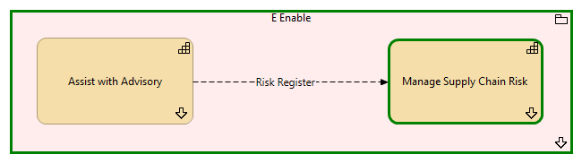

Manage Supply Chain Risk - Context
(
)

generated_by
build_archi_xml.py::gen_capability_context_view
generator_path
pedro/capabilities/build_archi_xml_assign/build_archi_xml_assign.py
run_at
2026-10-10T17:55:31
view_type
capability_context
E Enable
Manage Supply Chain Risk
Manage Supply Chain Risk - Processes
Assist with Advisory
Assist with Advisory - Processes
E Enable - Processes
Risk Register
Assist with Advisory
Manage Supply Chain Risk